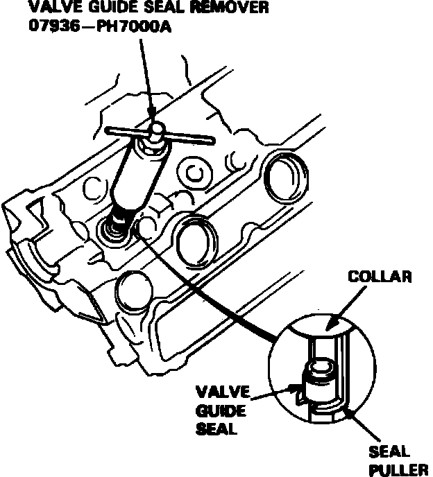

Valve Spring: Service and Repair
Fig. 25 Valve seal identification:

Fig. 26 Valve seal removal. 1987-88 Legend:

1. Remove valve cover and side cover, then the bearing cap, bearing cap pipe and camshaft.
2. Remove intake rocker arms, exhaust inside rocker arms and push rods.
3. Remove rocker shaft and exhaust rocker arms.
4. Compress valve springs using a suitable tool, then remove spring keepers and springs. With piston at TDC, insert a spark plug air hold fitting to hold valves closed and allow removal of the keepers.
5. Remove valve seals, Fig. 25. On 1986 models, remove seals using tool No. 07GAC-PH70100 or equivalent. On 1987-88 models, remove seals using tool No. 07936-PH7000A, Fig. 26, as follows:
a. Turn nut on tool counterclockwise until it contacts handle.
b. Slide seal puller fully out of collar.
c. Hold collar against nut and insert seal puller under valve guide seal.
d. Slide collar over seal puller to rest on valve spring seat.
e. While holding handle stationary, rotate nut on tool clockwise until seal is removed from guide.
f. Back off nut and slide seal puller down to remove old seal from tool.
6. Reverse procedure to install, noting the following:
a. Lubricate valve stems prior to spring installation.
b. Position valve springs with painted portion or closely wound coils toward cylinder head.
c. With springs installed, lightly tap end of each valve stem several times to seat valves and keepers.